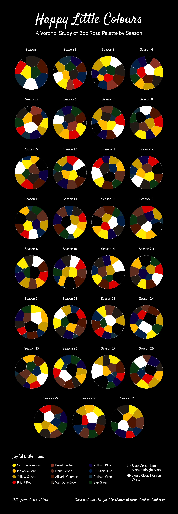

Happy Little Colours
Thirty-one seasons of Bob Ross, tested for whether his palette ever actually changed.

The Problem
Bob Ross is famous for a tight, recognisable colour palette. But, across 31 seasons and hundreds of paintings, did that palette actually stay consistent, or did it drift over three decades of The Joy of Painting? The question needed a season-by-season view to actually answer.
The measurement choice behind that question is stated plainly on the piece itself: each cell tracks the number of paintings in a season where a colour appeared, not the proportion of paint physically used within each artwork. The question being asked is, how often Ross reached for a colour, not how much of it ended up on any given canvas.
The Approach
Each season's colour-usage data — how many paintings that season used each named paint colour, from Titanium White to Phthalo Blue to Alizarin Crimson, was reconstructed as its own Voronoi diagram, with cell size reflecting frequency of use. Laid out as 31 small multiples side by side, the format makes season-to-season comparison direct.
The finding is that it doesn't drift. The same handful of colours (Titanium White, the blues, the yellows, the browns) reappear as large, dominant cells in nearly every one of the 31 seasons, confirming what Ross was known for: a genuinely consistent, repeatable palette rather than a stylistic evolution across the show's run.